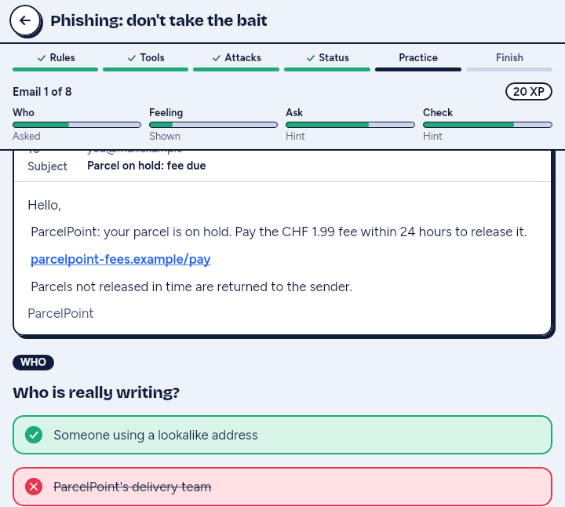
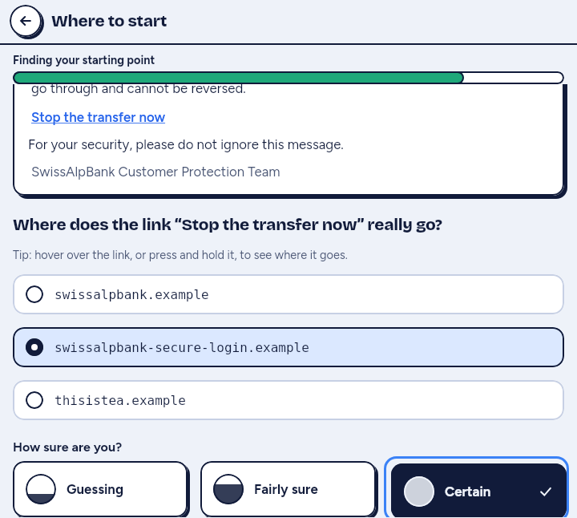
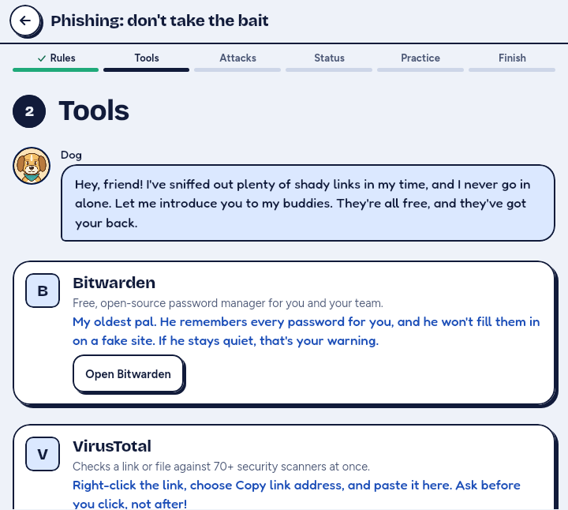
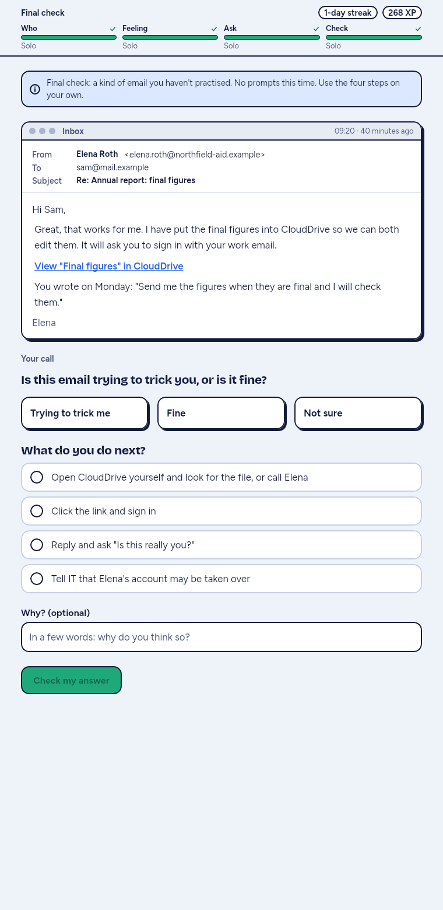
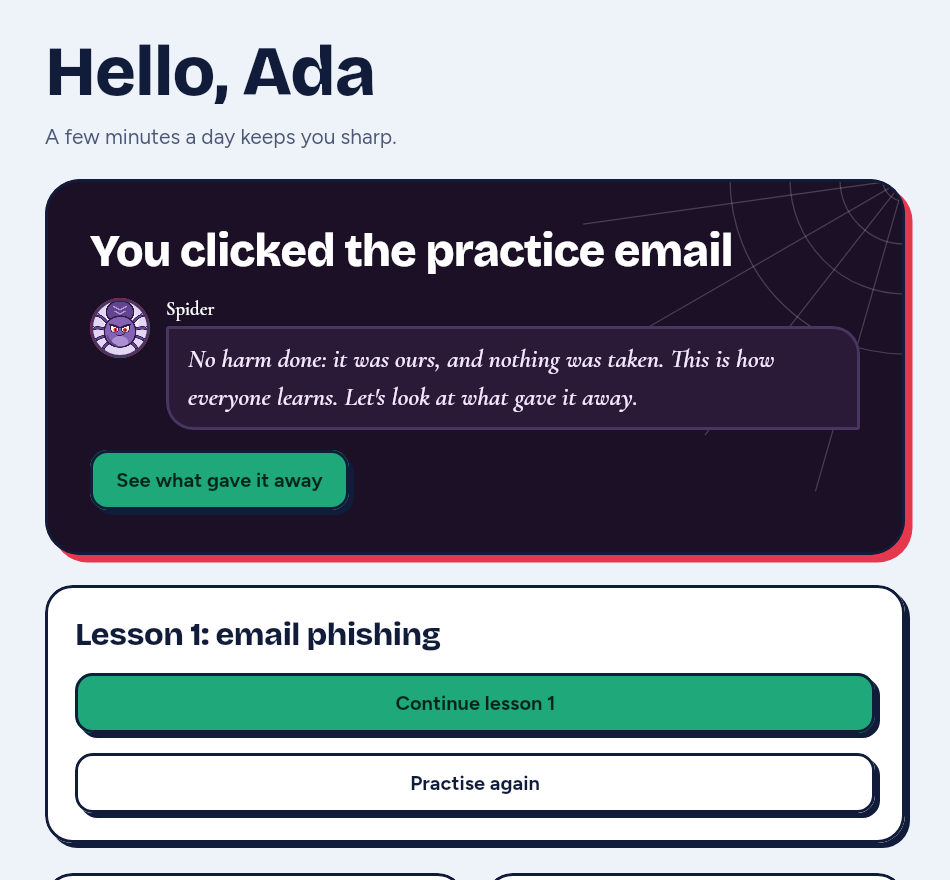
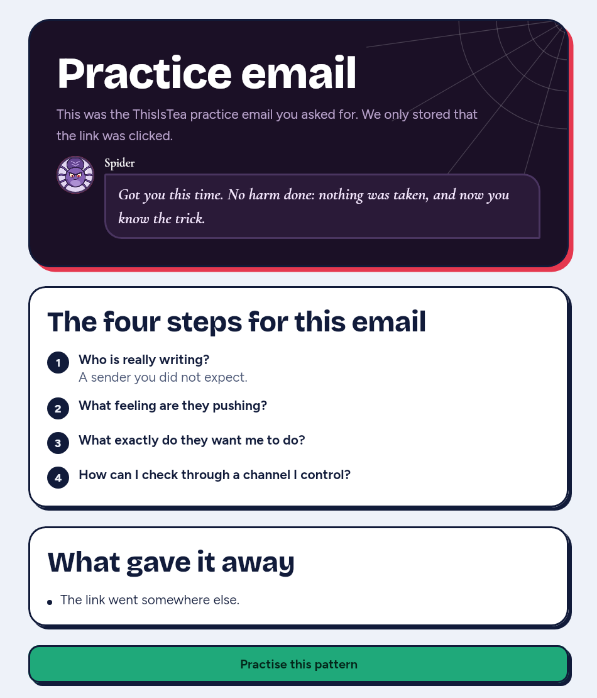
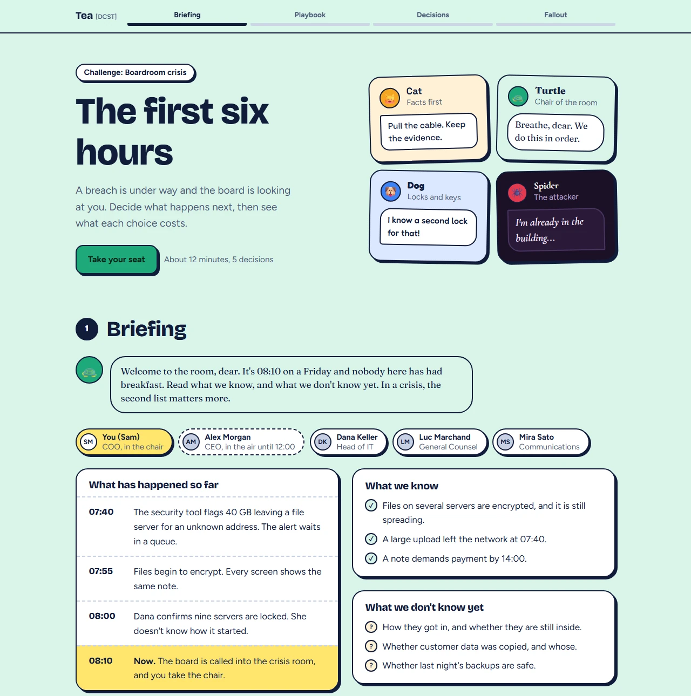
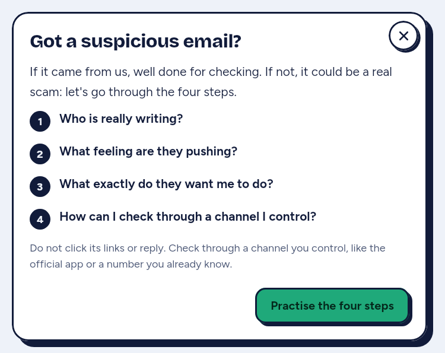
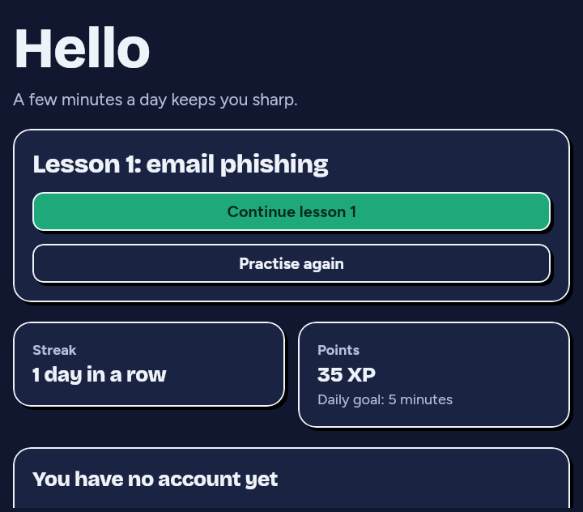

Bernard
Accounting, 23 years at the company“I passed the compliance quiz. The supplier said their bank details had changed, so I updated them.”
⚠ One changed IBAN, one quarter's payments gone.
Self-paced, interactive lessons that teach Bernard from accounting not to click the phishing email, and keep your grandma's pension out of a scammer's pocket.

I've already written to you…


 Feelings aren't evidence. Read the domain.
Feelings aren't evidence. Read the domain.
Everyone has sat through the yearly security video at double speed. Then a new scam shows up that doesn't look like the slides, and the click happens anyway.
“I passed the compliance quiz. The supplier said their bank details had changed, so I updated them.”
⚠ One changed IBAN, one quarter's payments gone.
“I know not to click links. But it was my grandson, from a new number, and he was in trouble.”
⚠ A pension saved over forty years, wired in an afternoon.
“The donor sent the grant form through a shared drive. It asked me to sign in again, so I did.”
⚠ One login, and every beneficiary's data with it.

People already know the tips. They fail when the scam is new.
So we teach a procedure, not a list.
Four questions that work on any message, practised until they are a habit, then tested on a scam you've never seen.
Email, SMS, a phone call, a WhatsApp from “your son”. The surface changes; the structure doesn't.
The channel, the sender, and how they got your contact.
ParcelPoint lives on parcelpoint.example, not parcelpoint-fees.example.
Urgency, fear, greed, love, authority. A deadline is a feeling someone put in you.
“Pay within 24 hours or the parcel is returned.”
Click, pay, give a code, log in, or forward the message to others.
A CHF 1.99 fee through a link = your card details.
Call the number on your card. Open the app yourself. Ask your grandson on his old number.
Never use the path they hand you.
Bite-sized theory first, then hands-on practice where the help fades as you get better, one step at a time. It ends with a scam you were never shown.
A short placement asks you to judge real-looking messages and say how sure you are. We learn which of the four steps you already do well, and where to begin.
Every lesson builds on what you already know, dear. We'll go one step at a time.


Each lesson is short and has a cast: Cat and Turtle give the rules, Dog brings free tools, and Spider, the trickster, shows you exactly how he'd have caught you.
Three rules each from Cat (protect yourself first) and Turtle (shield the whole team). Tap a card to read it larger.
Dog's buddies: Bitwarden, VirusTotal, Have I Been Pwned. Free tools, and when to reach for them.
“How I caught you”: Spider's email, with every trick hidden in it. Find all three.



Every email is worked through the four steps. At first each step is asked for you. As your mastery of that step rises, the prompt fades: asked → shown → hint → solo. Support is removed per learner, not on a schedule.
The same trick, a new coat of paint… Walk in through a door you already know, and I have nothing.
Practice mixes different-looking scams that share the same deep pattern. Then comes a kind of message that was held out on purpose. Catching it on your own is the proof the habit transfers, instead of pattern-matching on last week's examples.

When the lesson ends, a harmless practice email lands in your actual inbox at a time you don't expect, so you can't rely on “it's the scam app”. Click it, and Spider walks you through what gave it away.
No harm done: it was ours, and nothing was taken. This is how everyone learns.


A real item from the course, cut down to fit on this page. Pick an answer for each step.
Hello,
ParcelPoint: your parcel is on hold. Pay the CHF 1.99 fee within 24 hours to release it.
parcelpoint-fees.example/pay
Parcels not released in time are returned to the sender.
ParcelPoint
Four characters, each with their own voice and typeface, so you always know who is talking, and why. Spider plays the scammer, so you meet the tricks where they can't hurt you.
Me first. Then you. That's the order.
Passwords, phishing, what a site has no business asking. A zero-trust mindset, without the paranoia.
Together, we're much harder to crack.
Securing the team: reporting, second locks, offboarding, knowing the plan when things go wrong.

Oh, I know a tool for that!
Well connected. Brings free and open-source tools: password managers, link scanners, breach checks.
I've already written to you…
Plays the scammer in every exercise and the practice email. He teases, but he never takes anything.
The engine teaches procedures, and phishing is only the first one. Chapters cover personal habits, team decisions under pressure, and the scams that target seniors.

Read the sender, the link and the pressure. Four steps, one email at a time.
A breach is under way and the board is looking at you. Five decisions, six hours.
Long, different, and a second factor everywhere it matters.
The fake bank, the grandson in trouble, the group that moved.
One tap on Home walks you through the four steps on a real message you're unsure about.
Progress is saved on the device and syncs later. Start as a guest; make an account only if you want one.
English, French and Spanish today. Adding a language takes content files only, no code.
Readable on a small phone at arm's length: a large-text setting, and a light or dark theme.
A few minutes a day. Weekly leaderboard to bring the whole office, or the whole family, along.
A “What we know about you” page. Fictional brands, .example addresses, no contacts uploaded.




Each of the four steps has its own mastery estimate, updated after every answer with Bayesian knowledge tracing. A used hint or a very slow answer counts as wrong. The estimate picks the support:
Mastered means p ≥ 0.95 with three unaided answers. Hysteresis keeps a step from flickering between levels.
Four people, one Kotlin codebase, a containerised backend, and AI coding agents that worked from a written plan instead of guessing. Here is the architecture, the decisions behind it, and the workflow that kept four branches from colliding.
One shared Kotlin module holds the screens and the learning logic; the platform apps are thin shells around it. The backend is optional: without it the app runs as a guest on bundled content and syncs later.
wasmJs
JVM
own module
Every screen (Compose), the theme, the learning engines (placement, BKT mastery, fading, item selection, XP, streaks), content loading and validation, i18n, the network client and an offline sync queue.
Items, lessons and challenges in en/fr/es, bundled into the build. A contract between writers and engine, validated by tests.
/ app/api serverServes the Wasm build at /, proxies /api, automatic Let's Encrypt HTTPS.
Accounts and email codes, sync, leaderboard, password analysis (argon2id, never plaintext) and the opt-in practice email scheduler.
Through Exposed. H2 in memory for tests and quick local runs.
Tests on every push · Wasm mirror on GitHub Pages · a screenshot of every screen published to a branch.
Web, desktop and Android share every screen and engine. Why: one place to fix a bug, and the theme, dark mode and translations work everywhere at once.
Mastery, fading, selection and XP live in commonMain with no UI code. Why: they are unit-tested, and XP is computed the same way on client and server.
Items and lessons are JSON files with a fixed shape. Why: writers and coders work in parallel, and adding a language takes files only, no code.
One Compose file for production (Caddy + Ktor + Postgres), one for development that needs no .env. Why: the same stack runs on any host, and one origin means no CORS and no tunnel URLs.
Content ships in the build; progress is stored locally and queued for sync. Why: grandma's flaky Wi-Fi, and a demo that never depends on the venue network.
Click-only practice email, no tracking pixel, hashed passwords. AI grading sits behind an interface with a rules fallback. Why: what ships today makes no live AI calls, so it is cheap and predictable.
Kotlin end to end, from the canvas in your browser to the SQL on the server. We started from the JetBrains Kotlin Multiplatform wizard in IntelliJ IDEA and kept its stack.
shared module compiled to Wasm, JVM and Android. Small expect/actual files cover storage, HTTP, links and sharing.shared/src/commonMain/kotlin/tea/engine/Bkt.kt (trimmed)
object Bkt { const val SLIP = 0.10 const val LEARN = 0.12 /** Posterior given the answer, then the learning step. */ fun update(p: Double, correct: Boolean, guess: Double): Double { val posterior = if (correct) { val num = p * (1 - SLIP) num / (num + (1 - p) * guess) } else { val num = p * SLIP num / (num + (1 - p) * (1 - guess)) } return posterior + (1 - posterior) * LEARN } }
One declaration in commonMain, one actual per platform
// commonMain expect fun platformKeyValueStore(): KeyValueStore // wasmJsMain → localStorage // jvmMain → a file // androidMain → SharedPreferences
Coding agents are fast, but they invent whatever you leave out. So before any code we wrote the details down: the game loop, the data formats, the formulas, the styling and the characters. The agents had nothing left to make up, and every teammate's agent read the same files.
The pitch, the research behind it and the target audiences went into one idea file. Every choice that changed scope became a dated line in an append-only decision log. The rule: agents propose, humans decide.
The look was designed as a static HTML/CSS page, which is quick to iterate on in a browser. A 268-line design guide turned it into rules: each character owns a typeface, Spider always speaks from the dark, ink outlines and hard shadows, how copy is written. The characters' personalities got their own file. The HTML was then ported to a Compose theme and never shipped.
A single plan says exactly what to build: the game loop, who owns which part, five data contracts (database and events, item JSON, lesson JSON, personas, backend URL), every engine with its constants, every screen, the deployment files, the safety rules and a definition of done. Every other doc is a satellite, and when they disagree the plan wins. We drafted and refined this plan with JetBrains Air, using it for the AI planning before any agent wrote code.
# docs/mvp0-plan.md §1.1: the one loop we ship register → placement test (~3 min) → lesson 1: email phishing → practice, prompts fade per step → held-out email, all prompts off → opt-in: "send me one practice email" → real email in the real inbox → blame-free debrief with Spider
Because the plan had the numbers (SLIP = 0.10), the thresholds, the copy and the colours,
the first full build came out close to what we meant. The places where the plan was vague are where we had to fix things later.
AGENTS.md is read by every agent the team used, from JetBrains Air to Claude Code (which loads it through a one-line CLAUDE.md).
It sets a ritual for each session: merge main, then read the plan, the decisions, the task board and the others' handoffs.
It also sets the rules: own branch only, who owns which files, no real brands, core content written by humans, frugal AI, no secrets.
Once MVP 0 was on main, each new module started as a written brief naming the components to reuse and the rules to keep:
the Boardroom crisis challenge (397 lines, “no raw hex, no new colours”), the password Vault drill, the storytelling and the short demos.
Teammates built them in parallel on their own branches.
The tests render every screen off-screen, and CI publishes the images as a picture book on a screenshots branch.
A new screen does not compile until it is added to that test. Humans and agents reviewed the same pictures, and handoff notes
recorded what was clicked through in a real browser and what broke.
Agents don't get to skip process. Every teammate and their agent worked on their own branch, and work reached
main only through a pull request reviewed by someone else.
main.main, never push to someone else's branch, merge main in often.When the plan had the formula, the copy and the colour, the agent got it right the first time. Every vague line came back as a guess we had to undo.
Fixed JSON formats and API contracts let four people's agents build content, engines, screens and the server side by side without stepping on each other.
An early draft of the practice email read like a covert phishing kit, and the agents' safety checks flagged it. We rewrote it as a plain, explicit opt-in, and the decision log records why.
“I've already written to someone you love. Let's see if they're ready…”